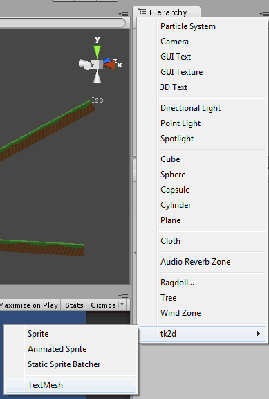

Documentation
Script Reference
Forum
Documentation
Script Reference
Forum
A TextMesh draws a custom string using a selected Font.
Create a TextMesh by clicking on "Create > tk2d > TextMesh" in the Hierarchy Window.

Choose a font from the dropdown, and select how many characters you wish to display on this TextMesh. Your string will be truncated if it exceeds this limit. You can also tweak the other properties here.